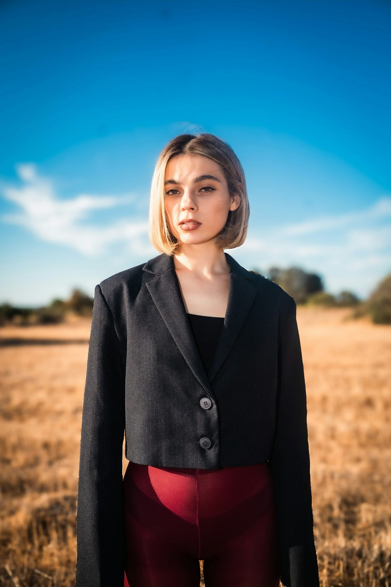
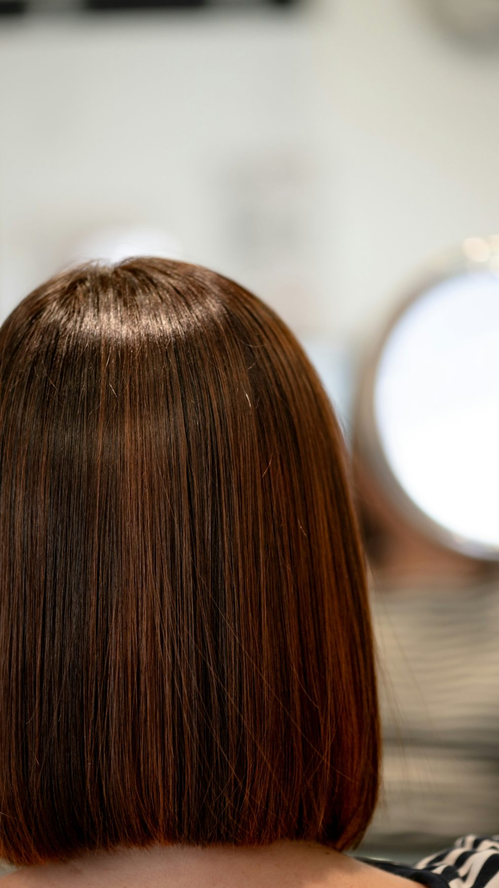
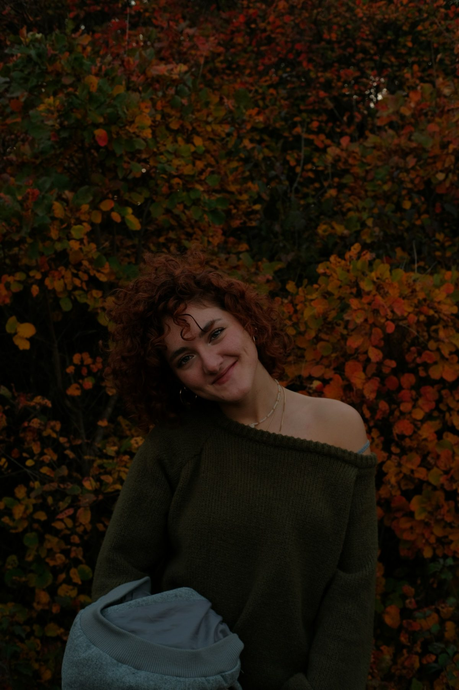
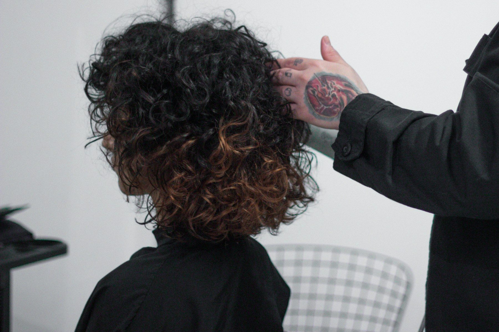
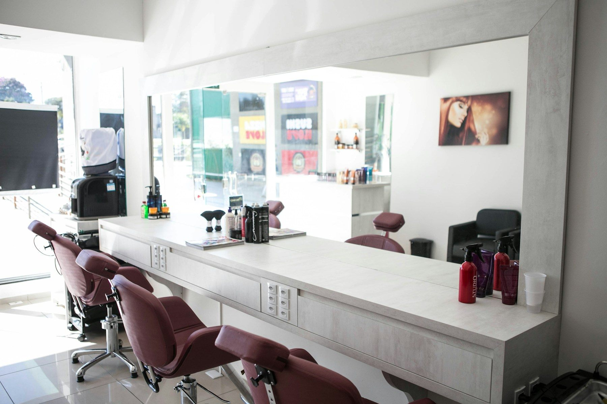

LIGHT / FACE LINE
顔まわりを、軽く。
耳にかけたときも、下ろしたときも。
さりげなく表情が変わるボブ。
- 印象
- すっきり・軽やか
- 相談のヒント
- 前髪と顔まわりの長さ

LOOK / 01朝の支度に、何分かけられるか。
髪を結ぶ日と、下ろす日はどちらが多いか。
服も、仕事も、休日の過ごし方も。
髪型の話をする前に、
そんな毎日のことを聞かせてください。
鏡の前だけでなく、明日からも心地よい髪を。
言葉にするのが難しいときは、写真から。
長さ、毛先、動き。近い雰囲気を選んでください。
耳にかけたときも、下ろしたときも。
さりげなく表情が変わるボブ。

BOB / CLEAN LINEまとまりのある輪郭。
毛先をそろえて、落ち着いた印象に。

TEXTURE / SOFT MOVEMENTまっすぐに整えるだけでなく、
髪が持つ表情を楽しむ。
すべて参考写真です。LINENの施術実績・所属モデルではありません。メモはこの画面内のみで保存され、送信されません。

IN GOOD HANDS.写真を見せても、今の悩みを話しても。
担当する人と、少しずつイメージを合わせます。
好きな雰囲気、仕事の日の髪型、朝に使える時間。避けたい長さも、先に伝えてください。
長さや顔まわりの見え方を、一緒に確認。小さな違和感も、その場で相談できるように。
乾かす向き、ワックスの量、手を入れる順番。家でも扱えるところまで共有します。

A LITTLE TIME FOR YOURSELF
大きな変化じゃなくてもいい。
前髪を少し短くするだけで、
気持ちが軽くなる日もあるから。
FIND YOUR NEXT LOOK
迷っていることも、そのままで。
相談したいメニューを選んでください。